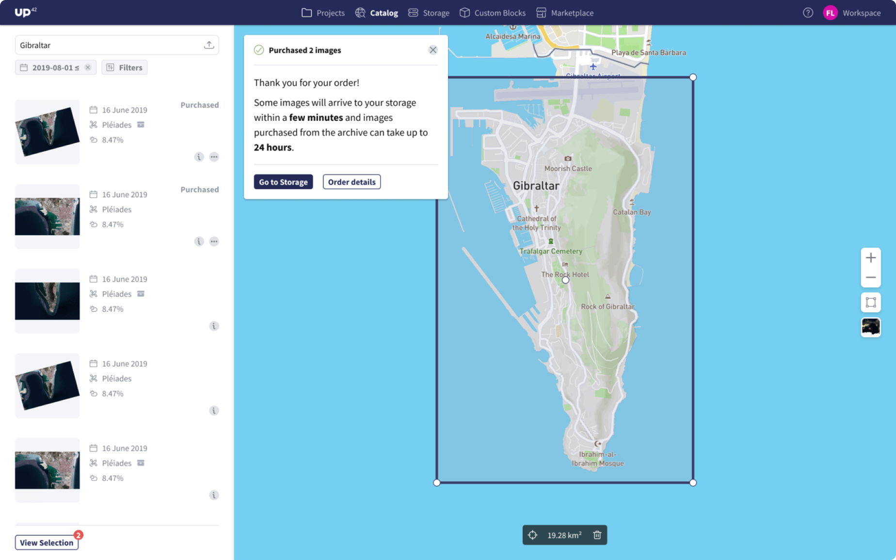

As in-house product designer, I worked on a tool that enables the exploration and purchasing of large amounts of satellite imagery through a map driven interface.
UP42 makes satellite imagery accessible to help people better understand the planet.
My challenge was to simplify how customers find and purchase over 510 million km² of Earth imagery through the platform.
Visit websiteBefore anything can be analyzed, the right imagery must first be found. This means defining the location, date, and type of image needed. The Catalog Search feature enables users to explore satellite data visually by searching locations and viewing results on a map.
The existing tool was an MVP, released to test market needs, but it presented major challenges in acquiring imagery efficiently. That’s where my role began—joining the new Data Platform team alongside a Product Manager, seven engineers, and myself as the designer.
Discovery
UP42’s largest customers use the platform primarily to purchase satellite imagery, including high-resolution Pleiades data, the biggest source of revenue to date.
While Catalog Search allows users to find imagery, there’s still no straightforward way to buy and download it. Customers must manually copy code parameters and configure workflows to retrieve images, a process that often fails. Analytics on job outputs (the results of a workflow) and Pleiades job failures show just how error-prone and frustrating this experience is.


UP42 works closely with a small group of committed users, collecting feedback through sales, support, and Productboard to help prioritize product problems. Trends in this data highlighted recurring issues with acquiring imagery.
I also ran testing sessions with both existing users and industry professionals. The first iteration focused on the testing the current feature, revealing pain points that mirrored the support feedback. This gave clear insights into the core problems to address in the redesign.
Insights made the problem clear: users needing satellite imagery face an unintuitive, error-prone ordering experience.
This meant creating an ordering process for easy data purchases, pricing transparency, and storage to access and re-use purchased data.
Design
1. Select images to purchase

2. Checkout to review & purchase images

3. Checkout confirmation
4. Storage of purchased images
After enabling customers to easily order and download satellite data, the next focus was helping them use that data for insights through UP42’s library of processing algorithms. The feature wasn’t well integrated, and Catalog Search lacked a user-friendly way to analyze data using workflows.
Further feedback and testing revealed issues with the ordering experience: unclear order confirmation, confusing pricing, difficulty understanding data product capabilities, and poor visibility of stored items.
Key improvements included:
Showing more information in the search results

Adding more filtering options

Image configuration panel that unifies all the options

Order summary with more transparency into pricing
Triggering data analysis

Showing more detailed image information in storage

Showing image preview in storage

Showing image location in storage
Design System

Following the release of the new ordering feature, usage grew steadily—particularly among UP42’s core customers. Orders increased consistently over time, generating over $350K in revenue to date and reducing workflow parameter errors.
Catalog Search became a central part of the platform’s value proposition. Over a year and a half, I continued improving it with the cross-functional Data Platform team, tackling new challenges such as integrating additional satellite data sources and supporting custom order requests.